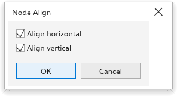

Bu sayfa henüz çevrilmedi ve İngilizce gösteriliyor.
Shaping curves with the Shape tool
The Shape tool (F10) edits the nodes and segments of a curve: you move nodes, bend segments, add and delete nodes and change how each node joins its segments.
Nodes and segments
Select a curve with the Shape tool. Its outline shows in the node color, its nodes as small markers, and the first node of each part of the curve as a slightly larger triangle. A selected node shows its control handles: dashed lines that end in an arrow at the control point.
A node is one of three types:
- Cusp: the segments meet at an angle; each handle moves on its own.
- Smooth: the curve passes through without a corner; the two handles stay in line.
- Symmetrical: smooth, with both handles the same length.
The pointer shows what a press would take: a small square over a node, a dot over a control handle, a wave over a segment.
Selecting nodes
- Click a node to select it alone; Ctrl+click adds it or takes it out of the selection.
- Shift+click selects every node from the last selected one to the one you click.
- Drag a marquee around nodes. The property bar's selection mode chooses a rectangular or a freehand marquee.
- Tab and Shift+Tab select the next or previous node; Home and End the first or last.
- Ctrl+A, the select all nodes button, or a double-click on the tool's button selects every node.
Moving nodes and bending segments
- Drag a node to move the selected nodes. Hold Ctrl to move only horizontally or vertically. Nodes snap like drawing points.
- Drag a segment to bend it: the point you grab follows the pointer while the nodes at its ends stay. A straight segment becomes curved.
- Drag a control handle to change the bend.
- The arrow keys nudge the selected nodes (Shift for a larger step, Ctrl for a smaller one).
- Double-click a segment to add a node there, a node to delete it. Click a segment to mark a spot, then press + to add a node there.
- Delete or - deletes the selected nodes; + adds a node in the middle of each segment that ends at them.
- With nodes selected, C switches them between cusp and smooth, S between smooth and symmetrical, and Y makes them symmetrical.
- With nodes selected, Ctrl+C copies the segments between them as new curves, Ctrl+X cuts them out, and Ctrl+D duplicates them.
Right-click a node or segment for a menu of the commands below.
The property bar
- Selection mode: rectangular or freehand marquee.
- Add node and Delete node.
- Join nodes joins two end nodes into one; Break curve splits the curve at the selected node.
- Convert to line and Convert to curve make the segment ending at the node straight or curved.
- Cusp, Smooth and Symmetrical set the node type.
- Reverse direction turns the curve round; Extend curve to close joins two selected end nodes with a straight segment; Extract subpath makes the part of the selected node a curve of its own; Close curve closes an open curve.
- Stretch and scale nodes and Rotate and skew nodes frame two or more selected nodes with handles: the corner handles scale (or rotate), the side handles stretch (or skew) only those nodes.
- Align nodes opens the Node Align dialog box (see below).
- Reflect horizontally and Reflect vertically: moving a node moves the selected nodes on the other side the mirrored way, so both sides of a shape change together.
- Elastic mode: the selected nodes move less the further they are from the one you drag, down to half as much for the furthest.
- Select all nodes.
- Reduce nodes removes nodes that are not needed, from the selected nodes or from the whole curve. Drag the curve smoothness slider to remove more nodes gradually.
Aligning nodes
To line up nodes:
- Select two or more nodes with the Shape tool.
- Click Align nodes on the property bar.
- In the Node Align dialog box, tick Align horizontal, Align vertical or both, and click OK.
The selected nodes move onto a common horizontal or vertical line, or onto one point when both are ticked.
The align keys work on the selected nodes too, two or more: L and R line them up with the leftmost or rightmost node, T and B with the top or bottom node, and E puts them on the middle of their height. Their control handles move with them. (C keeps making a node cusp here.)

Rectangles, ellipses, polygons and other objects
- Drag a corner node of a rectangle to round every corner; Ctrl+drag (or click it first) to round that corner only.
- Drag the node of an ellipse inside it to make a pie, outside it to make an arc.
- Drag a node of a polygon or star: the matching nodes follow, so the shape stays symmetric. Dragging the points between the corners sharpens or twists a star.
- Double-click a rectangle, ellipse or polygon to turn it into a curve.
- Drag a corner of a picture to crop it: the picture goes into a frame whose nodes you can edit like a curve.
- With text, the Shape tool moves single characters; see Adding and editing text.
The appearance of nodes and handles is set on the Nodes and Handles page of the options; see TraceDraw options.